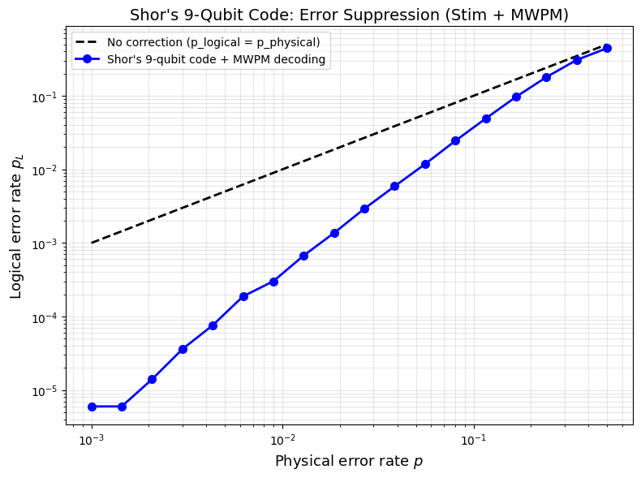
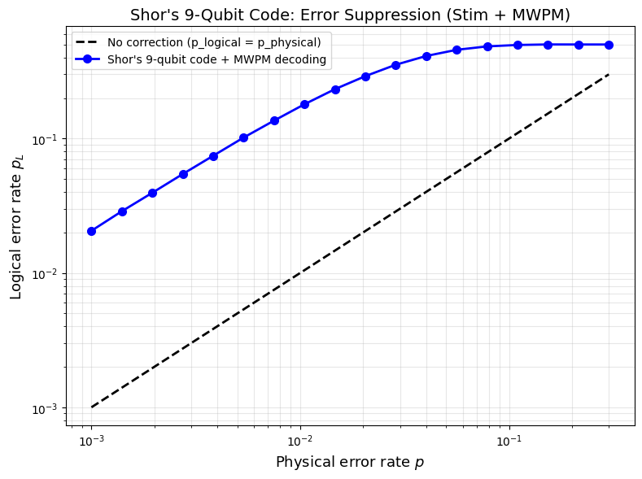

Simulating Shor's Code with Stim
We have built up Shor's 9-qubit code from first principles for detecting bit-flip and phase-flip errors and understanding when the code actually helps. let's try simulating it. We will use Stim, Google's high-performance stabiliser circuit simulator, to build the full encoding and syndrome-measurement circuit, inject noise, and identify where errors occur in the circuit using PyMatching. By the end, we will have a plot showing exactly how the logical error rate scales with the physical one for Shor's 9-qubit code.
What Is Stim?
Stim is an open-source Python library developed by Craig Gidney at Google for simulating stabiliser circuits at very high speed. A stabiliser circuit is one built entirely from Clifford gates — that is, Hadamard, CNOT, S, and Pauli gates — along with measurements and resets.
In the next article, we will introduce the stabiliser formalism and show that a circuit composed entirely of Clifford gates can be efficiently simulated by a classical computer. For now, think of Stim as a tool that lets us simulate Shor's error correction code and inject realistic noise models into a circuit.
The Qubit Layout
Shor's code encodes one logical qubit into nine physical qubits, arranged as three blocks of three:
Block 0: q0 q1 q2
Block 1: q3 q4 q5
Block 2: q6 q7 q8The code protects against any single-qubit error by combining two layers of protection:
- Bit-flip protection within each block.
- Phase-flip protection across blocks.
Shor's code can correctly identify and fix errors provided that at most one bit-flip error occurs per block and at most one phase error affects any one block.
Building the Circuit in Stim
A Stim circuit is built by appending instructions to a stim.Circuit() object. Each instruction names a gate and lists the qubits it acts on. Noise is injected by appending error channels — DEPOLARIZE1, DEPOLARIZE2, X_ERROR — after the gates that cause them. Measurements are declared with M.
Stim uses a DETECTOR to track errors. For Shor's code, each detector checks whether the measurement on an ancilla qubit is 0 or 1: a 1 means an error has occurred and the detector fires, while 0 means no error. In the more general case, detectors compute the parity of a set of measurements and compare them to the noiseless situation — we will address this properly in later articles.
The syndrome measurements provided by the detectors are fed into a decoder that predicts where in the circuit an error has occurred. Again, the topic of decoders is complex and we will address it properly in a later article. For now, all that matters is that the decoder takes the syndrome measurements and predicts where in the circuit the error has occurred.
We structure the circuit in five sections.
Section 1: Encoding
The encoding mirrors the circuit from the previous article. We first apply the phase encoding (H on q0, then CNOTs to q3 and q6, then H on all three lead qubits), and then the bit-flip encoding within each block:
c = stim.Circuit()
c.append("R", range(9))
# Phase encoding
c.append("H", [0])
c.append("CNOT", [0, 3, 0, 6])
c.append("H", [0, 3, 6])
# Bit-flip encoding within each block
c.append("CNOT", [0, 1, 0, 2])
c.append("CNOT", [3, 4, 3, 5])
c.append("CNOT", [6, 7, 6, 8])Section 2: Error Injection
For clarity, we start with a simplified noise model: after encoding the logical qubit across the nine physical qubits, we apply a depolarising error to each data qubit independently with probability \(p\). In depolarising noise, each qubit is left unchanged with probability \(1 - p\), or hit with an \(X\), \(Y\), or \(Z\) Pauli error, each with equal probability \(p/3\), such that the total probability of any error occurring is \(p\).
c.append("DEPOLARIZE1", range(9), p)This is an idealised situation with no noise on ancilla qubits, no noise on the syndrome extraction gates, and no measurement errors. It gives us a baseline before we introduce a more realistic model.
Section 3: Detecting Bit-Flip Errors
To detect bit-flip errors, we use six ancilla qubits (q9–q14). Each ancilla collects the parity of one adjacent pair within a block:
c.append("R", range(9, 15))
zz_pairs = [
(0, 1, 9), (1, 2, 10),
(3, 4, 11), (4, 5, 12),
(6, 7, 13), (7, 8, 14),
]
for d0, d1, anc in zz_pairs:
c.append("CNOT", [d0, anc])
c.append("CNOT", [d1, anc])
c.append("M", range(9, 15))
for offset in range(6, 0, -1):
c.append("DETECTOR", [stim.target_rec(-offset)])The DETECTOR fires when its measurement is 1, indicating an error has occurred on one of the data qubits.
Section 4: Detecting Phase Errors
Phase error detection is more involved. As described in the previous article, we first decode the bit-flip layer, then measure the parity across the three lead qubits using two ancillas (q15, q16), and finally re-encode the bit-flip layer:
# Decode bit-flip encoding
c.append("CNOT", [0, 2, 0, 1])
c.append("CNOT", [3, 5, 3, 4])
c.append("CNOT", [6, 8, 6, 7])
# Check for phase errors using the lead qubits
c.append("R", [15, 16])
c.append("H", [15, 16])
for data_q in [0, 3]:
c.append("CNOT", [15, data_q])
for data_q in [3, 6]:
c.append("CNOT", [16, data_q])
c.append("H", [15, 16])
c.append("M", [15, 16])
c.append("DETECTOR", [stim.target_rec(-2)])
c.append("DETECTOR", [stim.target_rec(-1)])
# Re-encode bit-flip layer
c.append("CNOT", [0, 1, 0, 2])
c.append("CNOT", [3, 4, 3, 5])
c.append("CNOT", [6, 7, 6, 8])In total, the circuit has 8 detectors: 6 for bit-flip errors and 2 for phase errors.
Section 5: Logical Observable
Finally, we measure all nine data qubits and define a logical observable \(Z_0 \otimes Z_3 \otimes Z_6\) — the parity of the three lead qubits. Stim records whether the physical errors that occurred during the simulation actually flipped this observable. This is the ground truth: a zero means the logical qubit was preserved, and a one means it was corrupted.
To evaluate the decoder's performance, we compare two things: what the decoder predicted and what actually happened. The decoder takes the syndrome — the pattern of detector firings — and outputs a yes/no prediction for whether a logical error occurred. It never sees the circuit or the qubits directly. Stim's ground truth tells us whether a logical error genuinely occurred. If the decoder's prediction agrees with the ground truth, the correction was successful. If they disagree, we count a logical failure: the decoder was fooled by the error pattern, typically because two or more errors occurred in the same block, leaving a syndrome that looks like a different, uncorrectable error.
c.append("M", range(9))
c.append("OBSERVABLE_INCLUDE", [
stim.target_rec(-9),
stim.target_rec(-6),
stim.target_rec(-3),
], 0)
return cSampling Detection Events
Once the circuit is built, extracting syndrome data is a single call:
det_sampler = circuit.compile_detector_sampler()
detection_events, observable_flips = det_sampler.sample(
shots=10,
separate_observables=True
)Each row of detection_events is one shot: a binary vector of length 8 indicating which detectors fired. A 1 means that detector fired. The observable_flips column records whether the logical qubit was actually corrupted. Here is an example of a detection event:
Shot 1: syndrome=[0 0 0 1 0 0 0 1] logical_error=1In this example, the syndrome fires on two non-adjacent detectors simultaneously, indicating two errors have occurred, one per block, and together they constitute a logical failure.
The Detector Error Model
Stim can automatically derive a Detector Error Model (DEM) from the circuit:
dem = circuit.detector_error_model(decompose_errors=True)The DEM is a probability-weighted list describing how each physical error mechanism maps to detector flips and whether it also flips the logical observable. For example:
error(0.022) D0
error(0.013) D0 D1
error(0.007) D0 L0The third line says: there is a 0.7% chance of an error that fires detector D0 and causes a logical error. This is exactly the input PyMatching needs — it does not require any knowledge of the underlying circuit, only how errors map to detector flips.
Decoding with PyMatching
PyMatching frames error correction as a graph problem. Each detector is a node; edges connect pairs of detectors that a single physical error can flip simultaneously. The weight of each edge is the negative log-probability of the corresponding error. Minimum Weight Perfect Matching (MWPM) then finds the minimum-weight set of edges whose endpoints cover the set of triggered detectors — in other words, the most likely explanation for the observed syndrome.
MWPM is a natural fit because the error syndromes in Shor's code appear as pairs of detector firings. A single physical error flips exactly two detectors, so the correction problem reduces to finding the minimum-weight pairing of triggered detectors.
matcher = pymatching.Matching.from_detector_error_model(dem)
predictions = matcher.decode_batch(detection_events)
num_logical_errors = np.sum(
np.any(predictions != observable_flips, axis=1)
)
logical_error_rate = num_logical_errors / shotsA logical error is counted whenever the decoder's prediction disagrees with the ground truth observable_flips.
Logical vs Physical Error Rate
Idealised Noise Model
Running the sweep across physical error rates from \(10^{-3}\) to 0.5, with 500,000 shots per point, gives the following result under our simplified noise model:

The blue curve sits well below the no-correction diagonal across the entire low-noise regime. This is the idealised best-case picture for Shor's code, where we only applied a depolarising error on each data qubit after encoding.
Realistic Noise Model
In a real quantum device, every operation is noisy. The realistic noise model applies:
X_ERROR(p)after each qubit reset, to model imperfect state preparation.DEPOLARIZE1(p)after every single-qubit gate.DEPOLARIZE2(p)after every two-qubit (CNOT) gate.M(p)on each measurement, to model readout errors.

Under this model, the picture changes dramatically: the logical error rate is always higher than the physical error rate, meaning Shor's code is actively making things worse across the entire range shown. The syndrome extraction circuit for Shor's code involves approximately 30 two-qubit gates per round, and every one of them introduces noise. At the error rates shown (\(p \geq 10^{-3}\)), the cumulative noise injected by the correction procedure outweighs the protection it provides. The code only begins to help at much lower physical error rates, well below \(10^{-3}\), where the probability of two errors co-occurring in the same block becomes smaller than the overhead introduced by the ancilla operations.
This highlights a fundamental constraint of quantum error correction: the hardware must already be highly reliable before error correction can improve on it. For Shor's code under a realistic noise model, that threshold sits at gate error rates that are beyond what most current devices can achieve — which is precisely why modern research focuses on more efficient codes, such as the surface code, that reach their threshold at more accessible error rates.
So far, we have learnt how to correct any single-qubit errors using Shor's code and how to simulate the protocol and test its performance under realistic noise models. Next, we will begin exploring the stabiliser formalism and examine the exact features in Shor's code that make error correction possible. We will also consider more efficient quantum error corrections, such as the surface code.